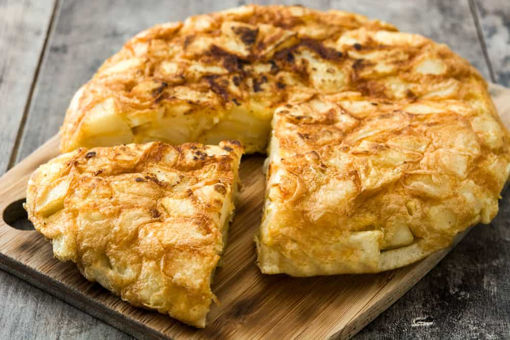

Tortilla de patatas

Ingredients
- 5 large potatoes
- 6 eggs
- salt
- pepper
- 1 medium onion
- olive oil
Steps
- Cut potatoes in 1cm thick pieces, onion in juliana and beat the eggs.
- In a nonstick pan with enought olive oil, cook the potatoes al dente.
- Take the potatoes out of the pan and then cook the onion until soft.
- Add the cooked potatoes and onion to the eggs add salt and to the pan again.
- Finish cooking the eggs, onion, potato mixture in the pan flipping the whole tortilla with a dish to cook both sides.